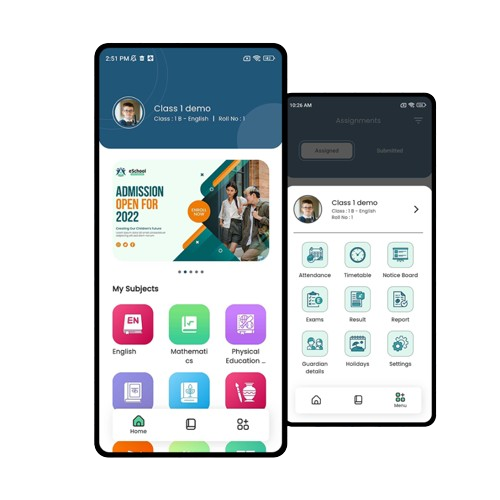
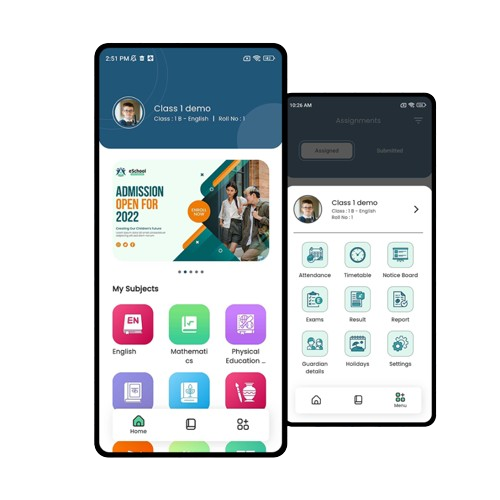

Frappe Framework
Tes Magang Ubig
Aplikasi Ini Memfasilitasi Pengelolaan Tes Magang Dengan Fitur
Seperti Pengaturan Kota Dan Manajemen Data Siswa.
Education
Aplikasi ini mendukung manajemen sekolah, termasuk pengelolaan
data siswa, kurikulum, dan penilaian.
LMS
Platform ini menyediakan pengelolaan pembelajaran, mencakup
pendaftaran kursus, penyampaian materi, serta evaluasi dan
penilaian.

 
